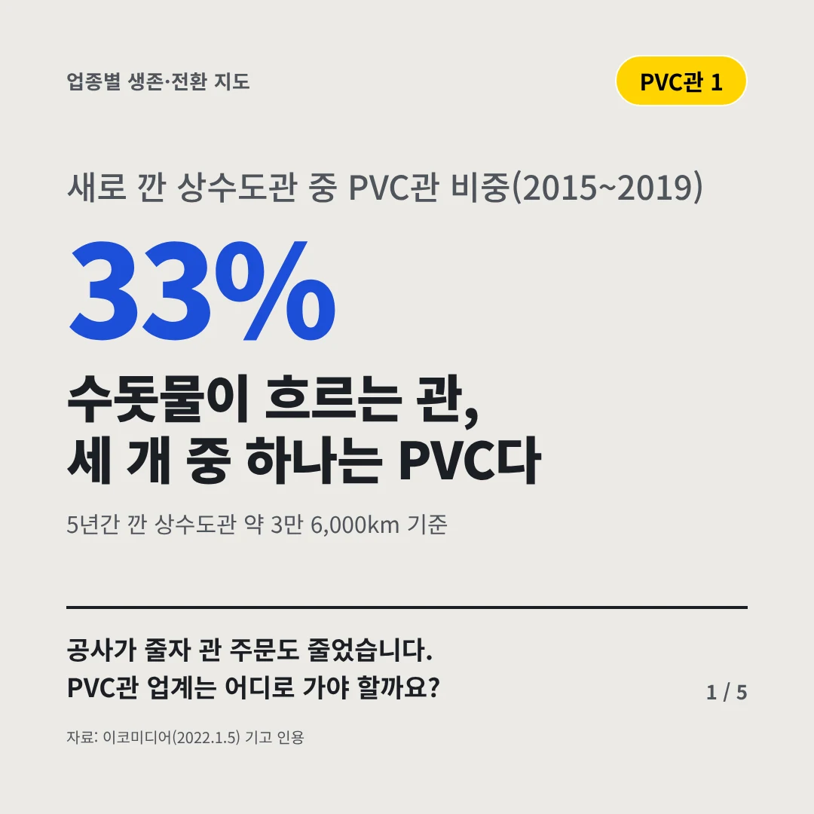
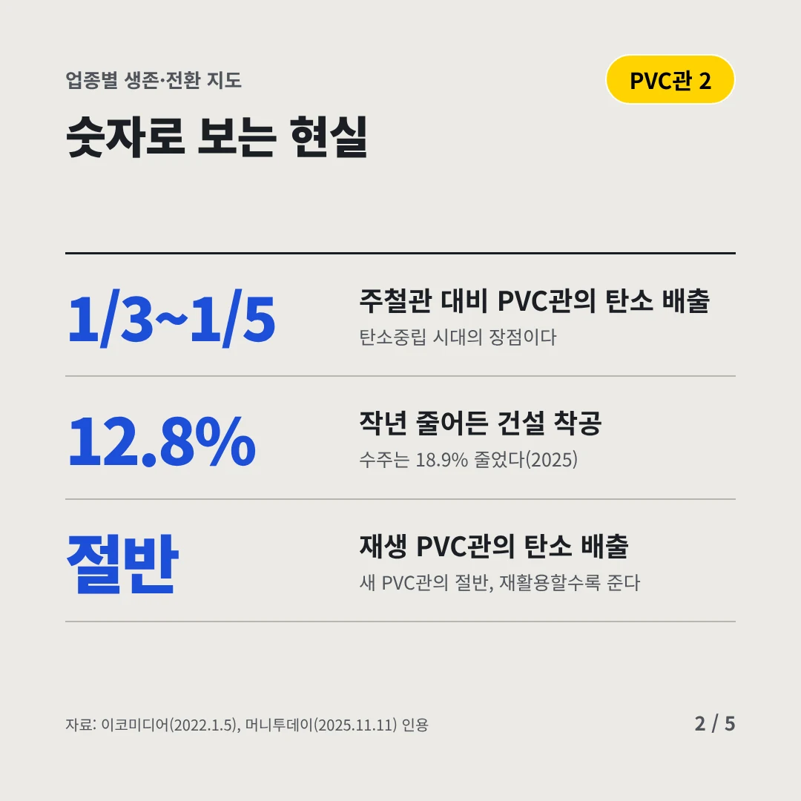
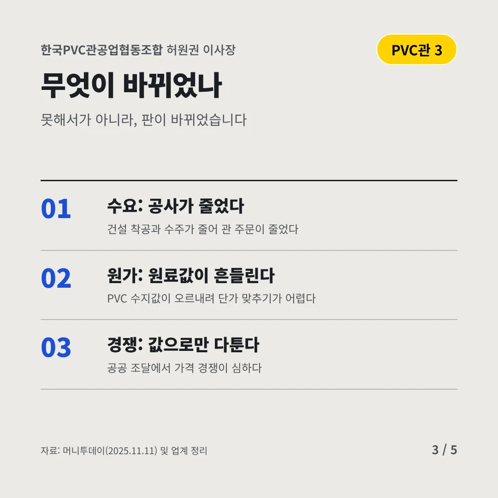
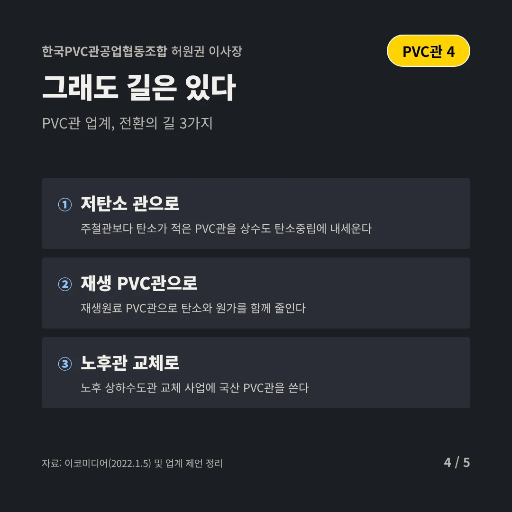
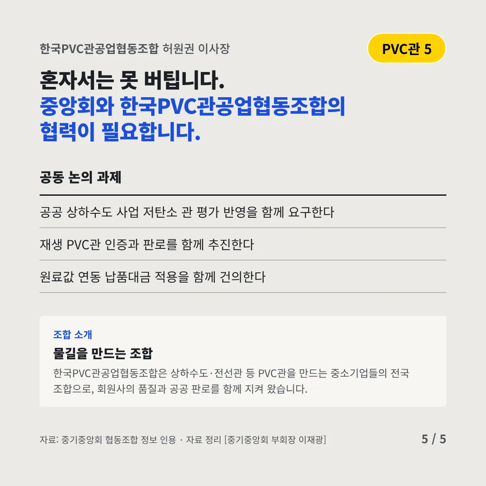
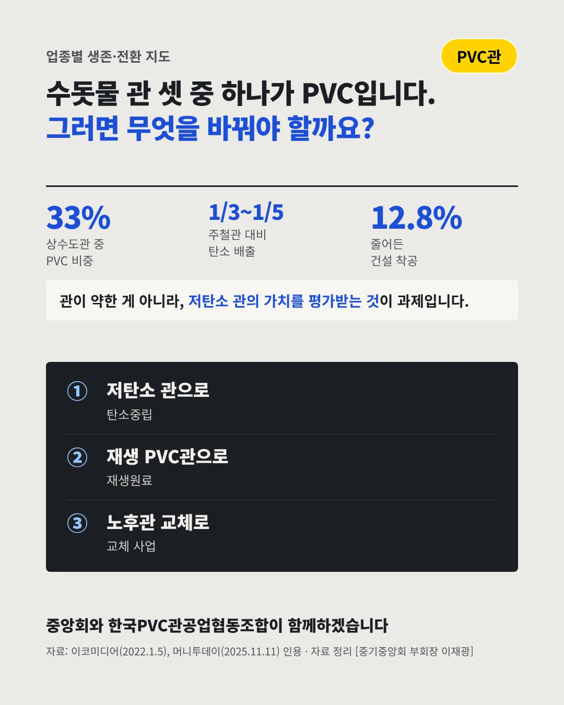

한국PVC관공업협동조합허원권 이사장
수돗물이 흐르는 관, 세 개 중 하나는 PVC다
33% 새로 깐 상수도관 중 PVC관 비중(2015~2019)






공사가 줄자 관 주문도 줄었습니다. PVC관 업계는 어디로 가야 할까요?
숫자로 보는 현실
- 1/3~1/5주철관 대비 PVC관의 탄소 배출탄소중립 시대의 장점이다
- 12.8%작년 줄어든 건설 착공수주는 18.9% 줄었다(2025)
- 절반재생 PVC관의 탄소 배출새 PVC관의 절반, 재활용할수록 준다
무엇이 바뀌었나
- 수요: 공사가 줄었다건설 착공과 수주가 줄어 관 주문이 줄었다
- 원가: 원료값이 흔들린다PVC 수지값이 오르내려 단가 맞추기가 어렵다
- 경쟁: 값으로만 다툰다공공 조달에서 가격 경쟁이 심하다
그래도 길은 있다
- 저탄소 관으로주철관보다 탄소가 적은 PVC관을 상수도 탄소중립에 내세운다
- 재생 PVC관으로재생원료 PVC관으로 탄소와 원가를 함께 줄인다
- 노후관 교체로노후 상하수도관 교체 사업에 국산 PVC관을 쓴다
한 장 요약

조합 소개
한국PVC관공업협동조합은 상하수도·전선관 등 PVC관을 만드는 중소기업들의 전국 조합으로, 회원사의 품질과 공공 판로를 함께 지켜 왔습니다.
자료: 이코미디어(2022.1.5), 머니투데이(2025.11.11)